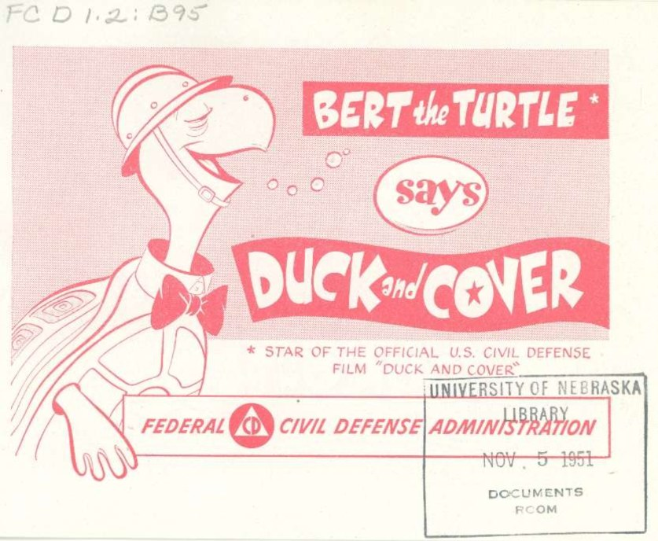

You're the fact-checker. For each part: read the pages on the left → get the checks right → write 1–2 sentences when asked. Done = 4 green parts, then turn in at the bottom.
Content note: This is a cartoon about surviving an atomic bomb. It shows explosions and broken windows, but no one is shown hurt.
Word help (tap to open)
- Civil defense = government plans to protect regular people in a war
- Atomic bomb = one bomb that can destroy a whole city
- Arms race = the U.S. and USSR racing to build more and bigger bombs
- Shelter = a safe place to hide
- Fallout shelter = an underground room stocked with food and water

Click the page to make it bigger.
Turn in your work
Your work saves on this device, so you can come back later. Your teacher sees it after you turn it in.
Comic: Bert the Turtle Says Duck and Cover (1951), Federal Civil Defense Administration, publication PA-6, U.S. Government Printing Office. A U.S. government work, so it is in the public domain. Scan of the University of Nebraska Library copy. Reader pages are the cover and pages 3, 6, 7, 8, 9, 10, 12, 13, and 15 of 16.